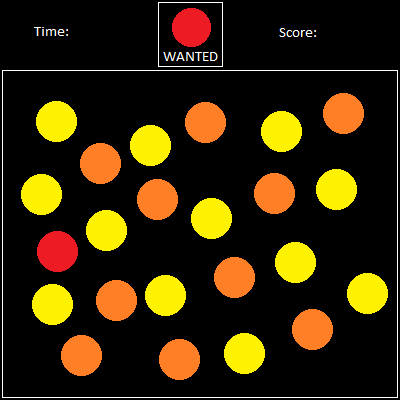

Project 3 Proposal
- Name: Find this guy!
- Concept: This game is a recreation of the Wanted! minigame from New Super Mario Bros. and Super Mario 64 DS. The player is given a character to find a crowd of other characters and must click on the correct character while they all move around the screen.
- Genre: Arcade / Score Attack
- Platform: Desktop, mobile-friendly
- Story: None
- Aesthetics: 2D cartoon pixel art. 8-bit sound effects for correctly and incorrectly clicking on character heads.
- Gameplay: Mouse click (keyboard & mouse) and touch (mobile). Player must click on the head of the character labeled as "Wanted" within the time limit. Title screen will have one line of text stating "Tap the wanted character before time runs out!"
-
Mockups/Reference Images:

- Other: https://www.mariowiki.com/Wanted!
- About the developer: My name is Jeremy Kotz. I'm a second year Game Design and Development student. I'm skilled in Game Design, Front-end Programming, and UI/UX Design.